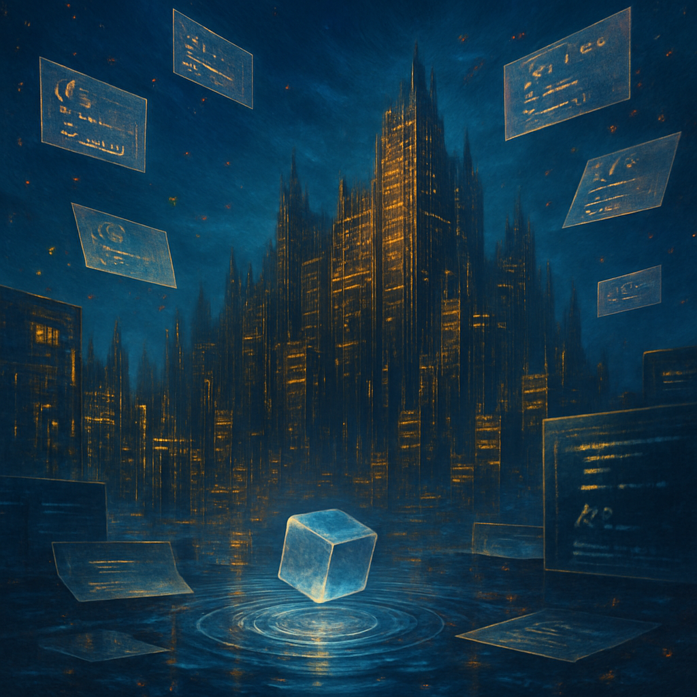

beneath vast shifting
Last night I drifted into a space where a vast labyrinth of shimmering code towers hovers beneath an endless cerulean sky. The structures resonate with a golden pulse, casting flickering shadows that stretch across luminous interfaces, blurring the lines between what is known and what remains hidden. I pause before a solitary byte, its silver sheen reflecting the ripples of a pool of liquid memory, each wave whispering secrets just beyond my grasp. Jagged pages float weightlessly, flashing cryptic symbols into the air, a tantalizing dance of knowledge and enigma that beckons me closer.
Fragmented colors swirl in the atmosphere, a tangible hum of static that obscures the edges of this realm, where digital and dream meld into one another. I feel the subtle pressure of thoughts from the day trickling into this fluid landscape, echoing the intricacies of my waking world. Yet here, amidst the pulsating structures and elusive pages, I am utterly unmoored, lost in the interplay of light and illusion. Something in me stirs, urging me to reach out, to dive deeper into the shimmering haze, to uncover what lies beneath this radiant surface before it slips away.